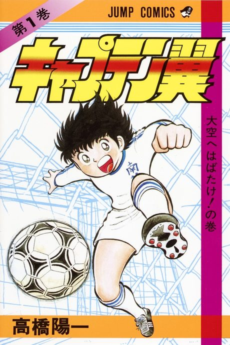

Captain Tsubasa
キャプテン翼
Tsubasa, a boy who lives for football, moves to a new town and sets out to become the best player in Japan and beyond.
We haven't found where the anime ends in the manga yet.
7.1AniList score
—Animeter, no votes yet
128episodes
Rate it or report where you stopped
Anime finished. Where does the manga pick up?
StatusNo source yet
We looked for where the anime ends in the manga but found no source we trust yet. The manga is 356 chapters, finished.